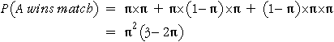

Simulations can take a long time
To simulate many real-life processes, millions of random numbers must be generated. For example, in a detailed simulation of a yachting match-race, we might randomly generate changes to the weather, crew performance and tactics every 10 seconds during the race.
Simplifying the tennis simulation
A little thought (and probabilit theory!) can greatly reduce the time it takes to perform simulations.
Our initial tennis simulation generated a complete match between two players. From several simulated matches, we estimated the probability that Player A wins a match. We will show next that we only need to simulate the probability of winning a single game — the probability of winning the complete match can be deduced from this.
Probability of winning match from probability of winning game
Firstly, we can deduce from the rules of tennis that there is no advantage in serving first — in any set, either both players serve in the same number of games (i.e. the total number of games is even, such as 6:4, 6:6 or 4:6) or the winning margin is high enough that the result would have been the same had the set been continued to an even number of games. (If there is a tie-break, we can similarly argue that both players serve the same number of points in it.) Therefore Player A has the same probability of winning each set in a match, irrespective of which player serves first.
If the probability that Player A wins any set is π, then we can list the possible sequence of sets result in Player A winning the match (AA, ABA and BAA for a women's match) and add up their probabilities.

We therefore only need to simulate individual sets to estimate π, not complete matches. The probability of winning a match can be easily estimated from this.
Equally matched players
If both players have the same probability of winning any point that they serve, we can further reason that each has the same probability of winning each set (since they serve the same number of games) and hence both have probability 0.5 of winning the match. (This does not require any simulations at all!)
(In the tennis example, it is possible to avoid simulations completely and find the probability of winning a set explicitly in terms of the probabilities of winning individual points. This needs a considerable amount of careful calculation however!!)
A little reasoning with probability can simplify what must be estimated in the simulation — or even avoid the need for simulations!